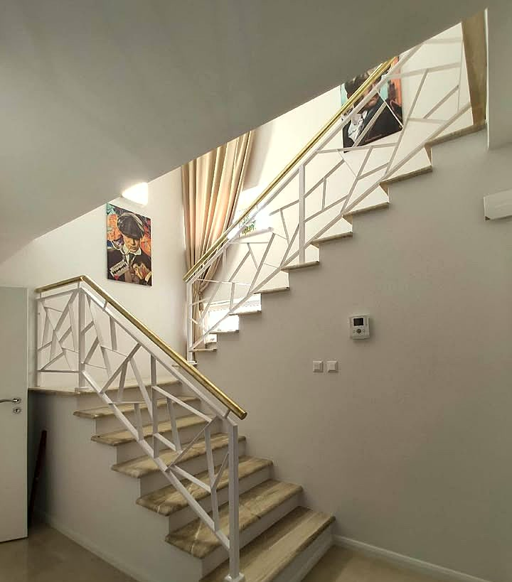

Usługi spawalniczeTuszyn, Łódź i okolice
Schody i balustradyze stali.Na wymiar.
Robimy schody, balustrady, ogrodzenia i konstrukcje stalowe na zamówienie. Mierzymy u Ciebie, spawamy i przywozimy gotowy element do montażu.
Czym się zajmujemy
Od schodówpo bramę wjazdową.
Z tym dzwonicie do nas najczęściej. Każdą rzecz robimy pod konkretne miejsce i wymiar.
Pełna oferta


O firmie
Spawamyw Tuszynie.
SPAWMAR to usługi spawalnicze z Tuszyna pod Łodzią. Robimy schody, poręcze i balustrady, ogrodzenia, bramy oraz konstrukcje stalowe na zamówienie.
Każde zlecenie zaczynamy od rozmowy i pomiaru, bo schody i balustrada mają pasować do Twojego wnętrza, a nie do katalogu. Gotowy element przywozimy i montujemy sami.
Jak pracujemy
Wiesz, na czym stoisz.Na każdym etapie.
-
01 / 04
Telefon
Mówisz, czego potrzebujesz: schody, balustrada, ogrodzenie albo konstrukcja. Poglądowe wymiary i zdjęcie miejsca bardzo pomagają.
-
02 / 04
Pomiar
Przyjeżdżamy i mierzymy na miejscu. Ustalamy wzór, a potem dostajesz wycenę.
-
03 / 04
Wykonanie
Tniemy i spawamy konstrukcję pod zmierzony wymiar, zanim pojawi się u Ciebie.
-
04 / 04
Montaż
Przywozimy gotowy element i montujemy go na miejscu. Odbierasz gotową pracę.
Realizacje
Stal, któratrzyma wymiar.
Schody, balustrady, bramy i konstrukcje. Więcej kadrów w galerii.
Cała galeria

Oferta
Stal na zamówienie,od A do Z.
Szczegóły każdej usługi są w ofercie. Opisz przez telefon, co trzeba zrobić, a powiemy, jak to ugryźć.
Schody stalowe
Wewnętrzne i zewnętrzne, proste i zabiegowe. Robimy też samą konstrukcję pod drewniane stopnie.
Balustrady
Na schody, antresole, balkony i tarasy. Prosty, nowoczesny wzór albo Twój własny pomysł.
Ogrodzenia i bramy
Przęsła, furtki i bramy spawane pod wymiar posesji.
Konstrukcje stalowe
Wiaty, zadaszenia, ramy i elementy nośne na zamówienie.
Montaż na miejscu
Gotową konstrukcję przywozimy i montujemy u Ciebie.
Spawanie i naprawy
Drobne prace ślusarskie na zlecenie i naprawy spawalnicze.
Opinie
Klienci oceniająnas w Google.
Obszar działania
Dojeżdżamydo Ciebie.
Jesteśmy w Tuszynie, przy ul. Brzezińskiej. Pracujemy w Tuszynie, w Łodzi i w okolicznych miejscowościach. Nie wiesz, czy do Ciebie dojedziemy? Podaj adres przez telefon.
- Tuszyn
- Łódź
- okoliczne miejscowości
Częste pytania
Dobrzewiedzieć.
Nie ma tu Twojego pytania? Odpowiemy przez telefon od ręki.
Ile kosztują schody albo balustrada?
Zależy od wymiarów, wzoru i długości. Przez telefon podamy wstępne widełki, a dokładną cenę po pomiarze na miejscu.
Przyjedziecie na pomiar?
Tak. Mierzymy na miejscu, żeby gotowa konstrukcja pasowała do schodów, ścian i posadzki bez poprawek przy montażu.
Zrobicie konstrukcję pod drewniane stopnie?
Tak. Spawamy stalową konstrukcję schodów, a stopnie z drewna kładzie się na niej później.
Mam własny pomysł na balustradę. Da się?
Pokaż szkic albo zdjęcie, które Ci się podoba. Powiemy, jak to zrobić ze stali i ile to będzie kosztować.
Naprawiacie też starą bramę czy ogrodzenie?
Tak, bierzemy też drobne prace ślusarskie i naprawy spawalnicze. Opisz, co się stało, a powiemy, czy warto naprawiać.
Kontakt
Schody, balustrada albo brama?Jeden telefon.
Odbieramy od poniedziałku do soboty, od 8 do 18. Opisz, czego potrzebujesz, a umówimy pomiar.
+48 726 067 340